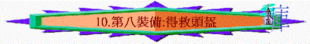

「並戴上救恩的頭盔，拿著聖靈的寶劍，就是神的道；」弗6:17
～頭是人的重要部份，若敵人攻擊人的頭部，也能致人於死地，所以軍兵出外打仗，往往會帶頭盔保護頭
～魔鬼撒但也會攻擊我們的思想，我們的信仰核心，人帶上救恩頭盔，就可以抵擋仇敵
一.救恩中的赦免----抵擋仇敵的控告
「我聽見在天上有大聲音說：「我 神的救恩、能力、國度，並他基督的權柄，現在都來到了！因為那在我們 神面前晝夜控告我們弟兄的，已經被摔下去了。弟兄勝過牠，是因羔羊的血和自己所見證的道。他們雖至於死，也不愛惜性命。。」啟12:10-11
「我們藉這愛子的血得蒙救贖，過犯得以赦免，乃是照他豐富的恩典。」弗1:7
～撒但會晝夜控告信徒，但我們有救恩後，知道主的寶血可赦免我們的罪，知道牠的控告已無效
二.救恩中的永活----抵擋仇敵的殺害
「那殺身體、不能殺靈魂的，不要怕他們；惟有能把身體和靈魂都滅在地獄裏的，正要怕他。」太10:28
「當我們死在過犯中的時候，便叫我們與基督一同活過來。（你們得救是本乎恩。）他又叫我們與基督耶穌一同復活，一同坐在天上，」弗2:5-6
～撒但可以殺害信徒，但我們在救恩中是永活，我們的靈魂是不死，將來可以與主一起的
三.救恩中的基業----抵擋仇敵的搶奪
「因為你們體恤了那些被捆鎖的人，並且你們的家業被人搶去，也甘心忍受，知道自己有更美長存的家業。」來10:34
「要照所安排的，在日期滿足的時候，使天上、地上、一切所有的都在基督裡面同歸於一。我們也在他裡面得（得：或作成）了基業；這原是那位隨己意行、做萬事的，照著他旨意所預定的，叫他的榮耀從我們這首先在基督裡有盼望的人可以得著稱讚。」弗1:10-12
「這聖靈是我們得基業的憑據（原文作質），直等到神之民（民：原文作產業）被贖，使他的榮耀得著稱讚。」弗1:14
～仇敵可以奪去我們的產業，但在救恩中，我們卻有不能被奪天上的基業
四.救恩中的恩典----抵擋仇敵的迷惑
「要將他極豐富的恩典，就是他在基督耶穌裡向我們所施的恩慈，顯明給後來的世代看。你們得救是本乎恩，也因著信；這並不是出於自己，乃是神所賜的；也不是出於行為，免得有人自誇。」弗2:7-9
～仇敵可能令我們靠自己自誇，也可能迷惑我們，叫我們靠行為得救，但我們要將救恩的觀念，放在腦海中，知道我們們得救恩是因著神的恩典，不是靠自的行為